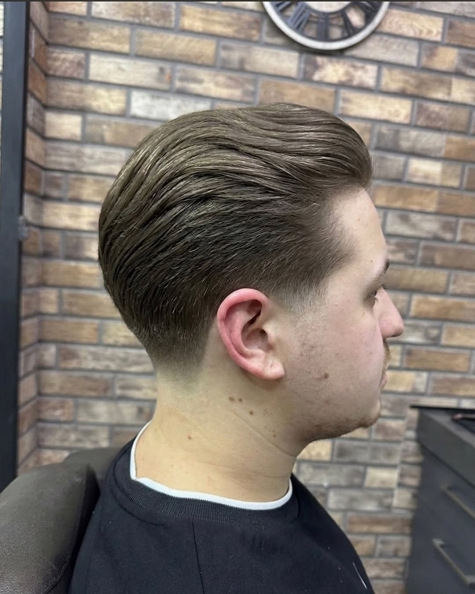
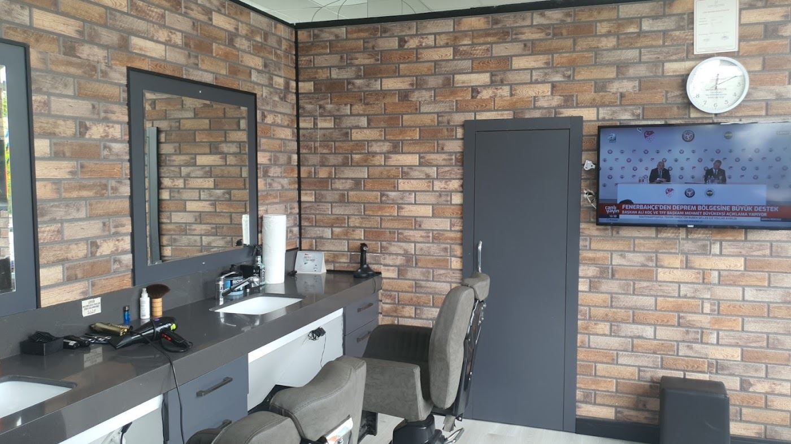
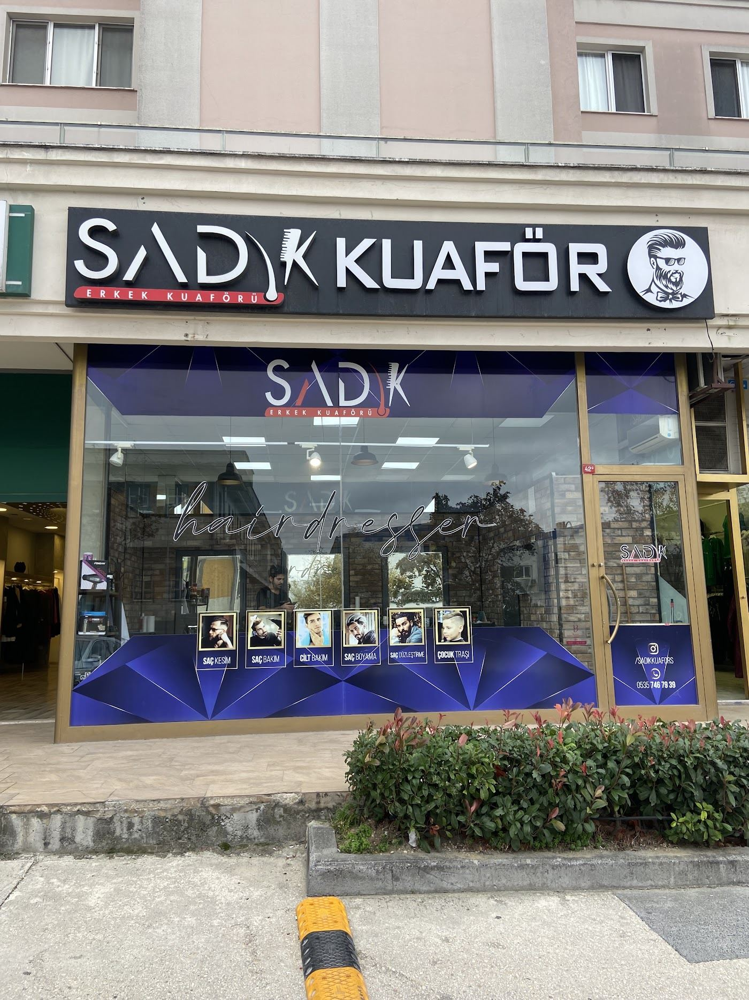

Anatomik kesim
Saç yapınıza ve yüz hatlarınıza göre şekillenen saç kesimi.
Kavaklı Konakları, Beylikdüzü
Yüz hatlarınıza ve saç yapınıza göre anatomik kesim. Kavaklı’daki salonumuzda tanışalım.

Anatomik kesim · Perma · Keratin · Renk kırma
Pazar hariç her gün · 0535 746 79 39
Saç modeliniz trendlere değil, yüz hatlarınıza ve saç yapınıza özel olmalı.
Nasıl bir görünüm istediğinizi konuşuyor, kesimi saçınızın doğal yönünü ve yüz hatlarınızı dikkate alarak şekillendiriyoruz.

İstediğiniz görünümü birlikte belirleyelim. İşlem ve uygun saat bilgisi için bize yazabilirsiniz.
Saç yapınıza ve yüz hatlarınıza göre şekillenen saç kesimi.
Dalgalı ya da kıvırcık bir görünüm için saçınıza uygun seçenekleri birlikte değerlendirelim.
Saçınızın mevcut durumuna ve bakım ihtiyacına göre işlem hakkında bilgi alabilirsiniz.
Ton değişikliği ve uygulama ayrıntıları için salonumuzla görüşebilirsiniz.
İşlem süresi ve ücret, saçınıza ve istediğiniz uygulamaya göre görüşmede netleşir.
Kesimlerimiz ve salonumuzdan fotoğraflar.

Kavaklı Konakları’ndayız. Kesimlerimizi ve yeni çalışmalarımızı Instagram hesabımızdan da inceleyebilirsiniz.
@sadikkuaforsYol tarifi alınSalonumuzu ziyaret edenlerin Google’da paylaştığı deneyimlerden.
Sadık Abi işini özenle yapıyor, saçın yapısına ve yüz anatomisine göre kesim yaptı. İlk kez anatomik saç kesimi deneyimledim, farkı gerçekten hissediliyor.
Saçlarım seyrek olduğu için istediğim görüntüyü yakalamakta zorlanıyordum. Sadık Bey yaptığı kesimle saçlarımı çok daha dolgun ve düzenli gösterdi. Sonuçtan çok memnun kaldım.
Yüz anatomisi, saçın doğal yönü ve kafa yapısına göre yapılan kesim gerçekten üst seviye. Kesim sonrası saçın doğal duruşu bile farkını belli ediyor.
İstediğiniz işlemi ve günü iletin. Uygun saati birlikte netleştirelim.
0535 746 79 39